Design assignment · Web App – Branding & Promotional Design · Faculty: Aaron A
Branding Imago
Imago turns an API response into an interface. Its identity is a logo with a brand book, an A4 print flyer and a blog banner, joined by one idea: raw data becoming something a person can read.


The brief, and the three files
One editable Illustrator file per task, each checked against the brief in its exports.
| Task | Editable file | What the brief asks for, and what the file has |
|---|---|---|
| 1 · App logo | imago-task1-logo.ai | Original, simple, scalable, editable vector; suitable colours and type. The file is a 13-page brand book. |
| 2 · A4 flyer | imago-task2-flyer-a4.ai | A4, CMYK, PDF/X-4 with bleed, no RGB. Logo, headline, benefits, a visual, a call to action with a working QR code. |
| 3 · Blog banner | imago-task3-blog-banner.ai | 1200 × 700 px, RGB. Identity, headline, a relevant visual, the shared style. |
The files
Download a file and it opens in Illustrator. On the Mac they were made on, all three sit in /Users/sibhi-zstch1643/conductor/workspaces/something-that-does-stuff/abu-dhabi/brand/kit/: "Copy Mac path" copies a file's path for Finder → Go → Go to Folder (⌘⇧G), and when this page is opened from that Mac itself, "Open local file" links straight to it.


One idea across all three
A response goes in, an interface comes out. Every piece shows that change of form.
The idea
Data in. Interface out.
The mark tells it, the flyer and banner show it, and the name means it: imago is an insect's finished adult form.
Two colours, one meaning
Ink and paper carry everything. Amber means "this changed since the last fetch", as in the app, so it appears once per piece.
Type
Inter Display for headlines, Inter for text, JetBrains Mono for data. The wordmark is outlined, so it never depends on the font.
The logo, and the brand book behind it
The Reveal mark: two bars, the keys and values an API sends back, join one body, and a window opens in it: the interface Imago finds.


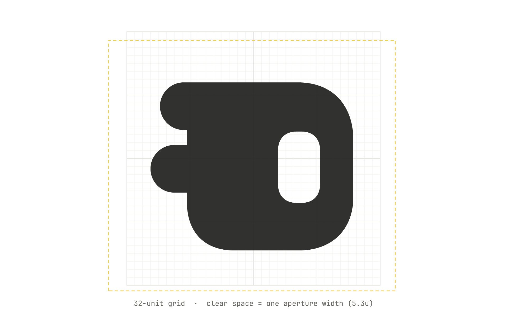


- Holds from a 16 px favicon to a poster; the book sets minimum sizes.
- Editable vectors, with SVG and PDF exports.
13 pages, three chapters
The Task 1 file is the brand book, with the logo and mascot drawn on its pages as vectors.
Logo

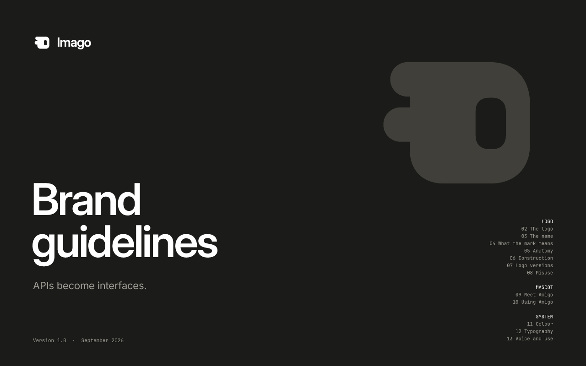

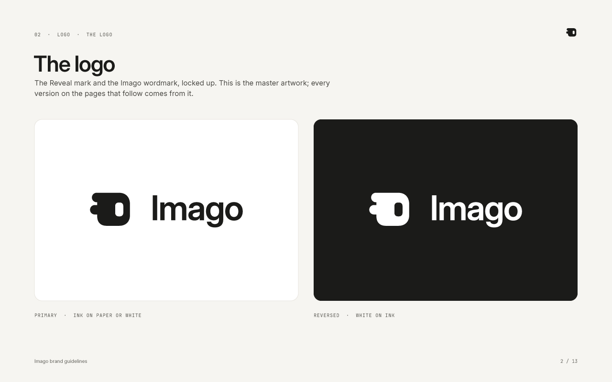

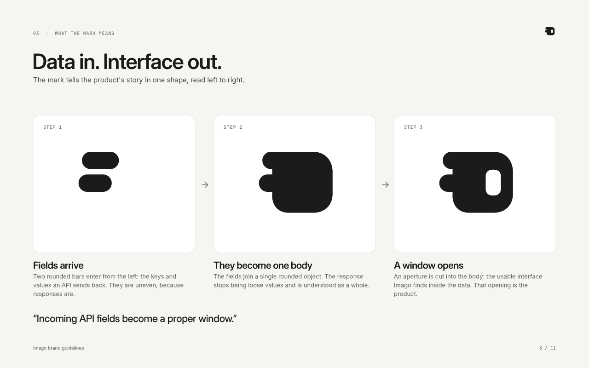

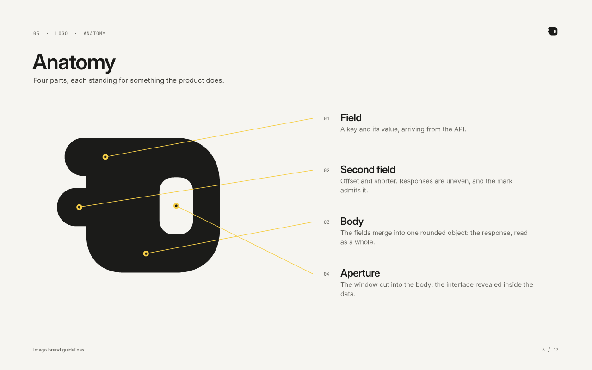

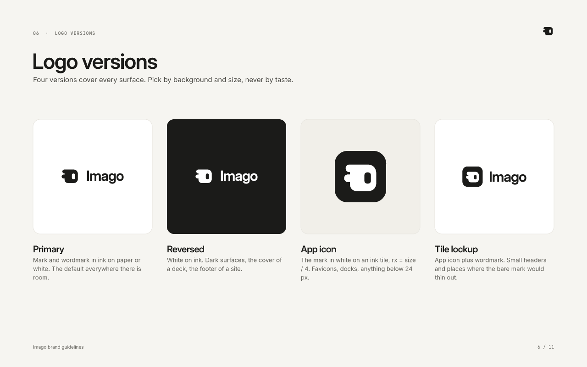

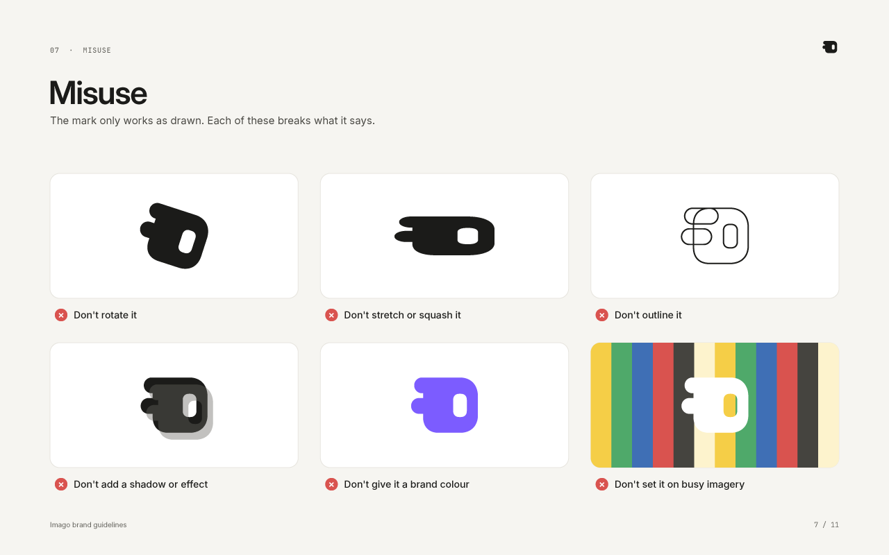

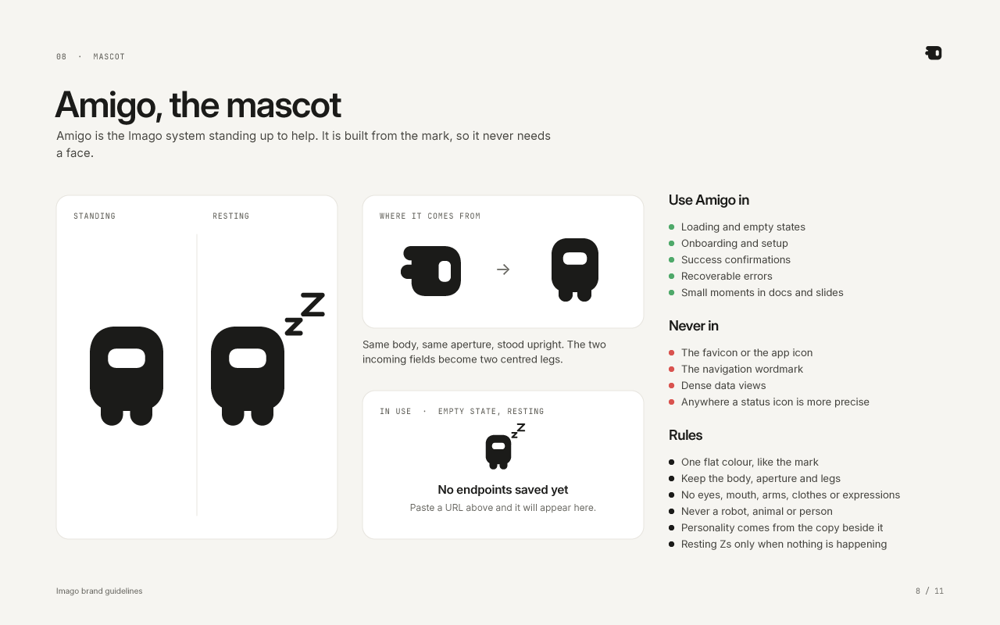
Mascot

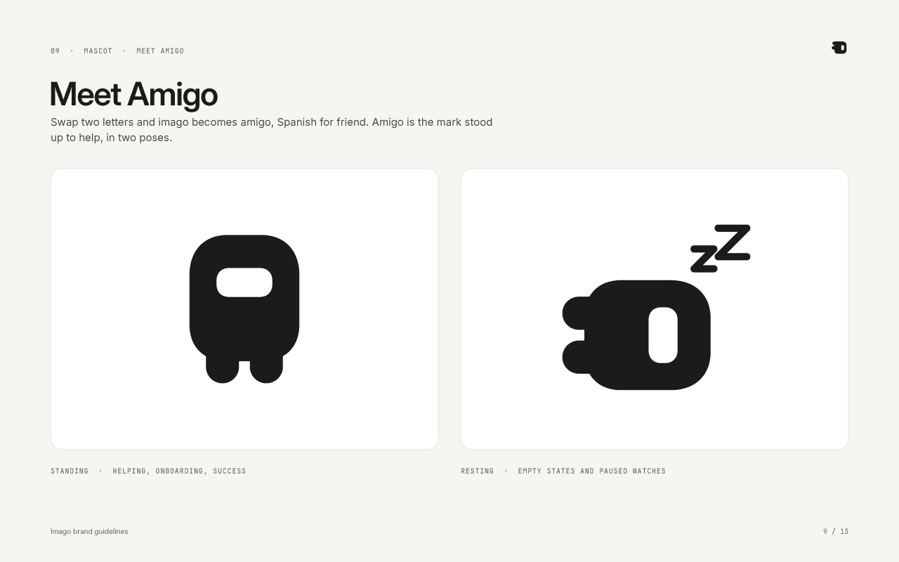

System


Amigo, the mascot

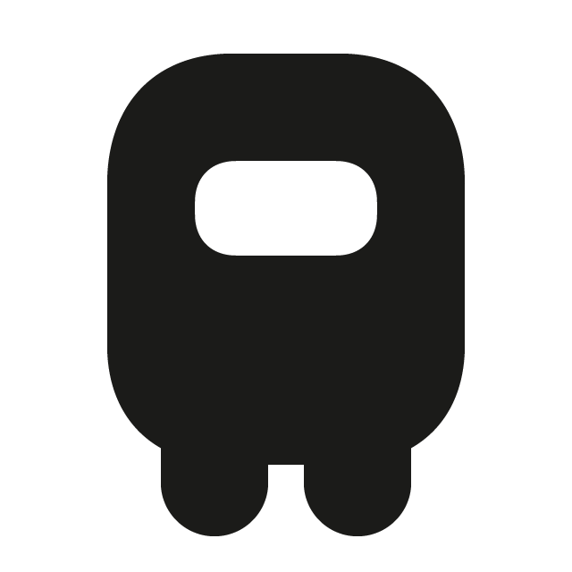

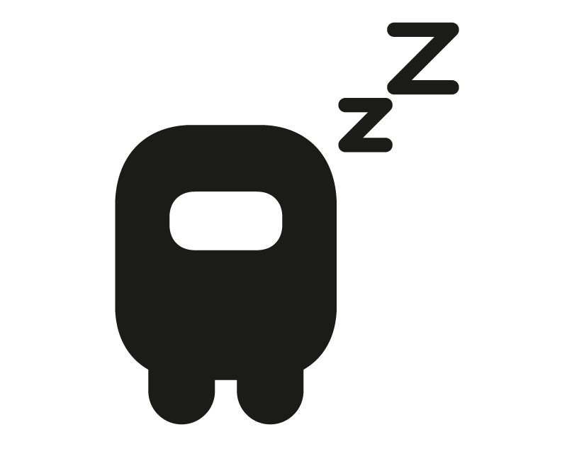
Swap two letters and imago becomes amigo, Spanish for friend.
- The mark stood up: the two fields become legs.
- No face, arms or clothes; the words beside it carry the personality.
- Loading, empty and success states; never the favicon, app icon or dense data.
- Zs only when Amigo lies down.
The A4 flyer: a handout that makes the case
A flyer is held and read, so it makes a short case: 15 words for a skimmer, 130 for a reader.
| The brief asks for | On the flyer |
|---|---|
| App logo and name | Top left, with "For anyone who works with APIs" |
| Headline or tagline | "APIs become interfaces." |
| Key features or benefits | Reads the shape, Remembers it, Watches it change, plus four plain facts |
| Visuals | A real Open-Meteo response becoming its interface; a three-step "how it works" |
| Call to action | "Paste your first endpoint.", the address and a vector QR code that decodes to the live site |
Reading order (AIDA)
- Attention: headline and picture
- Interest: "Raw JSON is hard to read", and the fix
- Desire: three benefits, then facts that build trust
- Action: free, no account; the link and QR code
More detail
The four facts: runs in your browser, keys stay on your device, works without a key, share any page as a link. They stand in for testimonials. The QR code is 3.4 cm with its quiet zone.
Not the first answer
The brief asks not to accept the first AI answer. These calls changed the work.
The flyer took three rounds
29 words
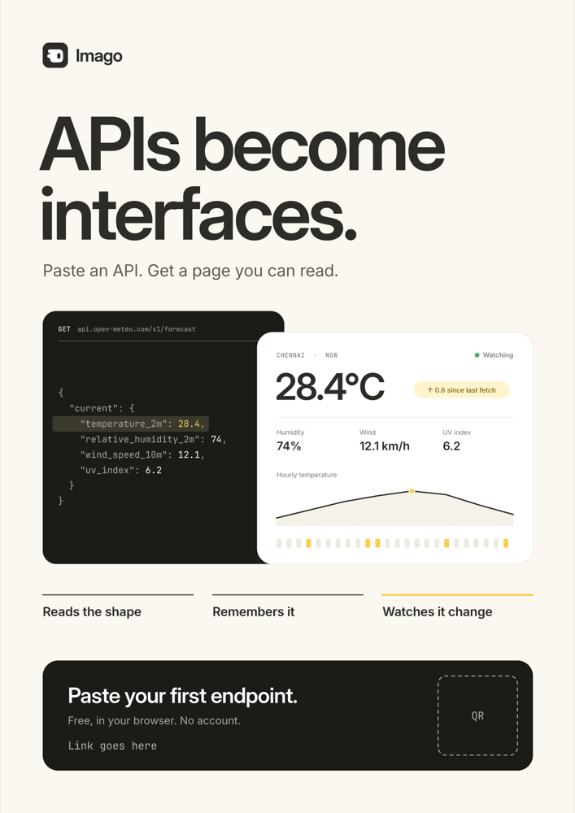
A poster's glance. It undersold the product, so I asked for research.
About 130 words
Handouts carry 50 to 150 words, in AIDA order, with a skim layer and a read layer.
More detail
After round 1 I asked what a promotional flyer is for; after round 2, how much a handout should carry. The link and QR code became real once the live address was found.
The banner stopped copying the hero

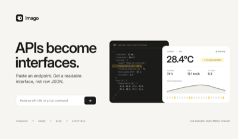

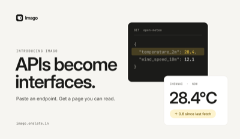
Amigo's Zs moved

Kept on purpose: the mark
The app's existing Reveal mark, drawn from its recorded geometry. Explored alternatives did not replace it.
Five files became three
Logo, mascot and guidelines merged into one Task 1 brand book: one file per task.
Tools, and how it was made
Every piece is a layered Illustrator document drawn from scripts, so it rebuilds in seconds.
Adobe Illustrator
All three files, all vector. It ran Claude's ExtendScript scripts, with named layers, swatches and artboards, and wrote the .ai files and exports.
Claude (Claude Code)
Research, copy, the scripts, and checking:
- every export viewed
- banner tested at 400 px
- print PDF: PDF/X, CMYK, trim
- QR code decoded
For the tool usage form
Adobe Illustrator
Claude
Not used: Photoshop. The few raster images are exports of the vector files.
The flyer and banner show Open-Meteo data and should carry its credit, "Weather data by Open-Meteo.com".